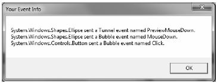

Properties are not the only .NET programming construct to be given a facelift in order to work well within the WPF API. The standard CLR event model has also been refined just a bit to ensure that events can be processed in a manner that is fitting for XAML’s description of a tree of objects. Assume you have a new WPF Application project named WPFRoutedEvents. Now, update the XAML description of the initial window by adding the following <Button> control which defines some complex content:
<Button Name="btnClickMe" Height="75" Width = "250" Click ="btnClickMe_Clicked"> <StackPanel Orientation ="Horizontal"> <Label Height="50" FontSize ="20">Fancy Button!</Label> <Canvas Height ="50" Width ="100" > <Ellipse Name = "outerEllipse" Fill ="Green" Height ="25" Width ="50" Cursor="Hand" Canvas.Left="25" Canvas.Top="12"/> <Ellipse Name = "innerEllipse" Fill ="Yellow" Height = "15" Width ="36" Canvas.Top="17" Canvas.Left="32"/> </Canvas> </StackPanel> </Button>
Notice in the <Button>’s opening definition you have handled the Click event by specifying the name of a method to be called when the event is raised. The Click event works with the RoutedEventHandler delegate, which expects an event handler that takes an object as the first parameter and a System.Windows.RoutedEventArgs as the second. Implement this handler as so:
public void btnClickMe_Clicked(object sender, RoutedEventArgs e) { // Do something when button is clicked. MessageBox.Show("Clicked the button"); }
If you run your application, you will see this message box display, regardless of which part of the button’s content you click on (the green Ellipse, the yellow Ellipse, the Label or the Button's surface). This is a good thing. Imagine how tedious WPF event handling would be if you were forced to handle a Click event for each and every one of these sub-elements. Not only would the creation of separate event handlers for each aspect of the Button be labor intensive, you would end up with some mighty nasty code to maintain down the road.
Thankfully, WPF routed events take care of ensuring that your single Click event handler will be called regardless of which part of the button is clicked automatically. Simply put, the routed events model automatically propagates an event up (or down) a tree of objects, looking for an appropriate handler.
Specifically speaking, a routed event can make use of three routing strategies. If an event is moving from the point of origin up to other defining scopes within the object tree, the event is said to be a bubbling event. Conversely, if an event is moving from the outermost element (e.g., a Window) down to the point of origin, the event is said to be a tunneling event. Finally, if an event is raised and handled only by the originating element (which is what could be described as a normal CLR event), it is said to be a direct event.
In the current example, if the user clicks the inner yellow oval, the Click event bubbles out to the next level of scope (the Canvas), then to the StackPanel, and finally to the Button where the Click event handler is handled. In a similar way, if the user clicks the Label, the event is bubbled to the StackPanel and then finally to the Button element.
Given this bubbling routed event pattern, you have no need to worry about registering specific Click event handlers for all members of a composite control. However, if you wished to perform custom clicking logic for multiple elements within the same object tree, you can do so.
By way of illustration, assume you need to handle the clicking of the outerEllipse control in a unique manner. First, handle the MouseDown event for this subelement (graphically rendered types such as the Ellipse do not support a click event; however, they can monitor mouse button activity via - MouseDown, MouseUp, etc.):
<Button Name="btnClickMe" Height="75" Width = "250" Click ="btnClickMe_Clicked"> <StackPanel Orientation ="Horizontal"> <Label Height="50" FontSize ="20">Fancy Button!</Label> <Canvas Height ="50" Width ="100" > <Ellipse Name = "outerEllipse" Fill ="Green" Height ="25" MouseDown ="outerEllipse_MouseDown" Width ="50" Cursor="Hand" Canvas.Left="25" Canvas.Top="12"/> <Ellipse Name = "innerEllipse" Fill ="Yellow" Height = "15" Width ="36" Canvas.Top="17" Canvas.Left="32"/> </Canvas> </StackPanel> </Button>
Then implement an appropriate event handler, which for illustrative purposes will simply change the Title property of the main window:
public void outerEllipse_MouseDown(object sender, MouseButtonEventArgs e) { // Change title of window. this.Title = "You clicked the outer ellipse!"; }
With this, you can now take different courses of action depending on where the end user has clicked (which boils down to the outer ellipse and everywhere else within the button’s scope).
Note Routed bubbling events always move from the point of origin to the next defining scope. Thus, in this example, if you were to click the innerEllipse object, the event would be bubbled to the Canvas, not to the outerEllipse, as they are both Ellipse types within the scope of Canvas.
Currently, if the user clicks the outerEllipse object, it will trigger the registered MouseDown event handler for this Ellipse object, at which point the event bubbles to the button’s Click event. If you wish to inform WPF to stop bubbling up the tree of objects, you can set the Handled property of the RountedEventArgs parameter to true:
public void outerEllipse_MouseDown(object sender, MouseButtonEventArgs e) { // Change title of window. this.Title = "You clicked the outer ellipse!"; // Stop bubbling! e.Handled = true; }
In this case, you would find that the title of the window is changed, but you will not see the MessageBox displayed by the Click event handler of the Button. In a nutshell, routed bubbling events make it possible to allow a complex group of content to act either as a single logical element (e.g., a Button) or as discrete items (e.g., an Ellipse within the Button).
Strictly speaking, routed events can be bubbling (as just described) or tunneling in nature. Tunneling events (which all begin with the Preview suffix—e.g., PreviewMouseDown) drill down from the topmost element into the inner scopes of the object tree. By and large, each bubbling event in the WPF base class libraries is paired with a related tunneling event that fires before the bubbling counterpart. For example, before the bubbling MouseDown event fires, the tunneling PreviewMouseDown event fires first.
Handling a tunneling event looks just like the processing of handling any other events; simply assign the event handler name in XAML (or, if needed, use the corresponding C# event-handling syntax in your code file) and implement the handler in the code file. Just to illustrate the interplay of tunneling and bubbling events, begin by handling the PreviewMouseDown event for the outerEllipse object:
<Ellipse Name = "outerEllipse" Fill ="Green" Height ="25" MouseDown ="outerEllipse_MouseDown" PreviewMouseDown ="outerEllipse_PreviewMouseDown" Width ="50" Cursor="Hand" Canvas.Left="25" Canvas.Top="12"/>
Next, retrofit the current C# class definition by updating each event handler (for all objects) to append data about the current event into a string member variable named mouseActivity, using the incoming event args object. This will allow you to observe the flow of events firing in the background:
public partial class MainWindow : Window { string mouseActivity = string.Empty; public MainWindow() { InitializeComponent(); } public void btnClickMe_Clicked(object sender, RoutedEventArgs e) { AddEventInfo(sender, e); MessageBox.Show(mouseActivity, "Your Event Info"); // Clear string for next round. mouseActivity = ""; } private void AddEventInfo(object sender, RoutedEventArgs e) { mouseActivity += string.Format( "{0} sent a {1} event named {2}.\n", sender, e.RoutedEvent.RoutingStrategy, e.RoutedEvent.Name); } private void outerEllipse_MouseDown(object sender, MouseButtonEventArgs e) { AddEventInfo(sender, e); } private void outerEllipse_PreviewMouseDown(object sender, MouseButtonEventArgs e) { AddEventInfo(sender, e); } }
Notice that you are not halting the bubbling of an event for any event handler. If you run this application, you will see a unique message box display based on where you click the button. Figure 31-6 shows the result of clicking on the outer Ellipse object:
Figure 31-6 Tunneling first, bubbling second
So, why do WPF events typically tend to come in pairs (one tunneling and one bubbling)? The answer is that by previewing events, you have the power to perform any special logic (data validation, disable bubbling action, etc.) before the bubbling counterpart fires. By way of an example, assume you have a TextBox that should only contain numerical data. You could handle the PreviewKeyDown event, and if you see the user has entered non-numerical data, you could cancel the bubbling event by setting the Handled property to true.
As you would guess, when you are building a custom control that contains custom events, you could author the event in such a way that it can bubble (or tunnel) through a tree of XAML. For the purpose of this chapter, I will not be examining how to build custom routed events (however, the process is not that different from building a custom dependency property). If you are interested, check out the topic “Routed Events Overview” within the .NET Framework 4.0 SDK documentation. Here, you will find a number of tutorials which will help you on your way.